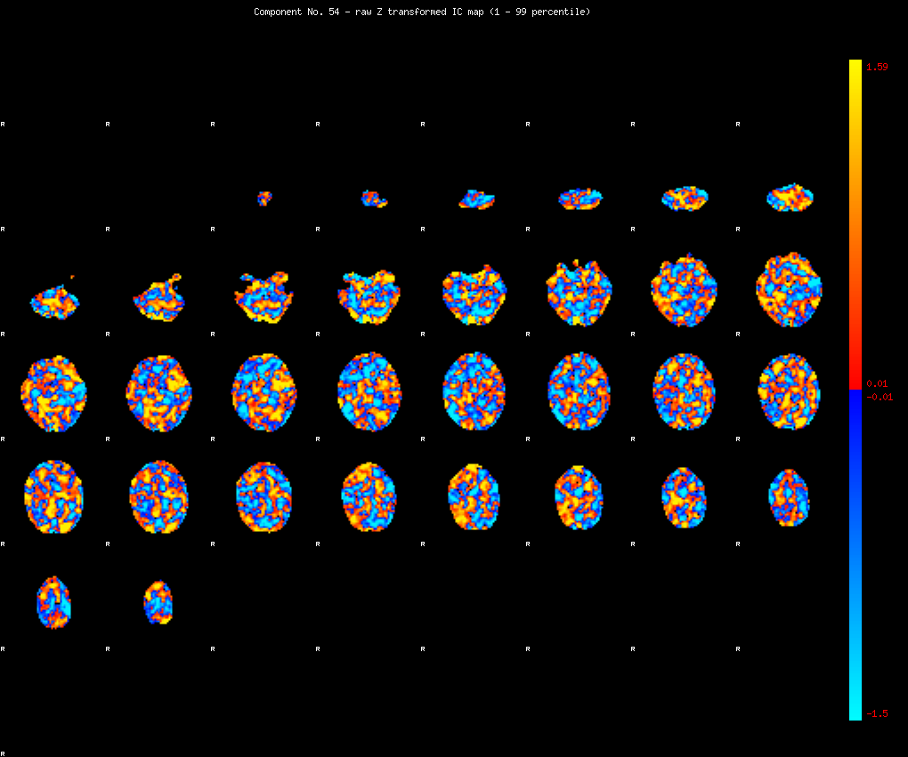
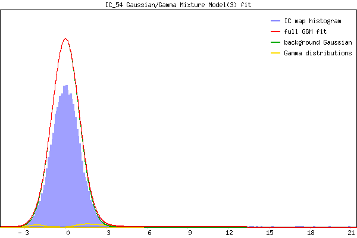

IC_54 Mixture Model fit
Means : 0.000000 2.287901 -2.208225
Vars : 1.000000 1.488550 0.294756
Prop. : 0.977610 0.016727 0.005663
This page produced automatically by MELODIC Version 3.13 - a part of FSL - FMRIB Software Library.